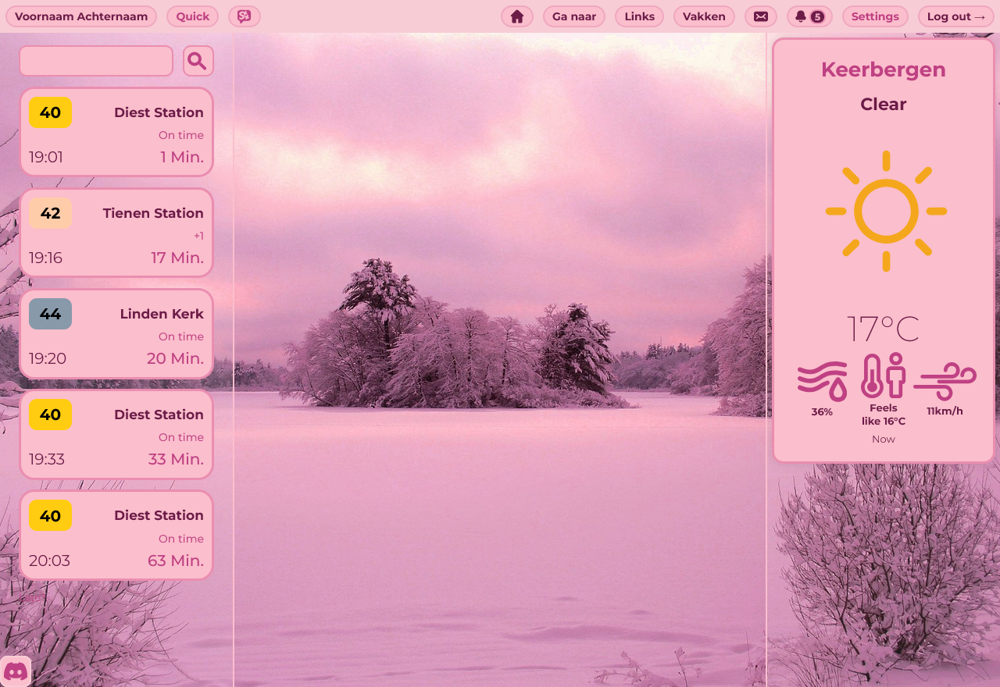
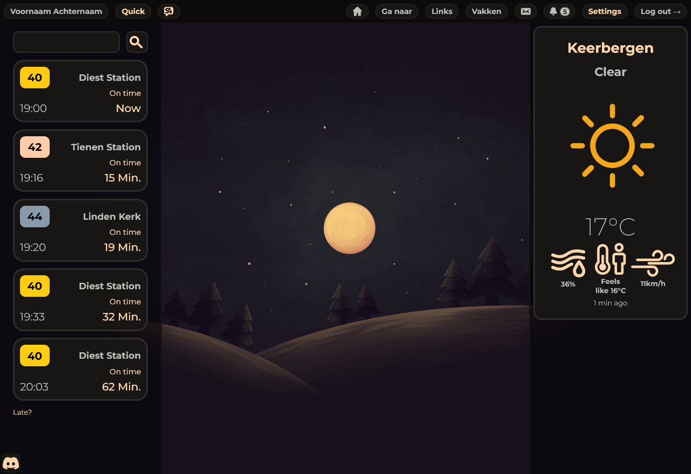
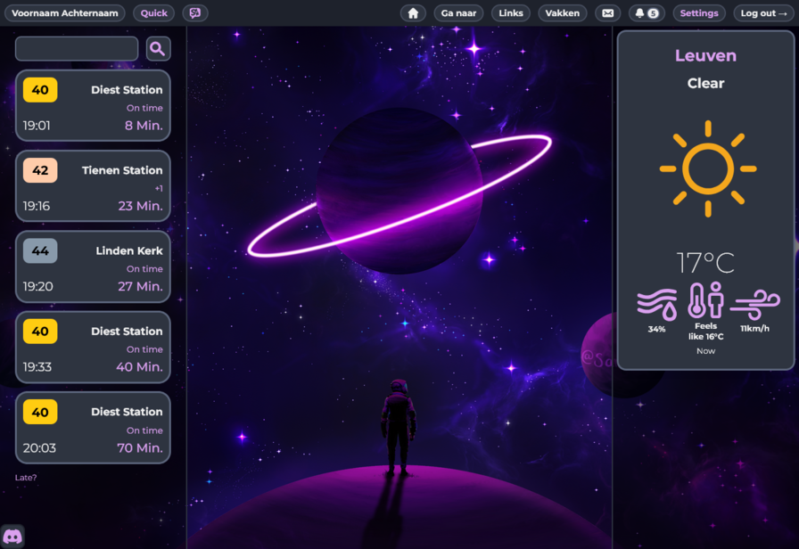
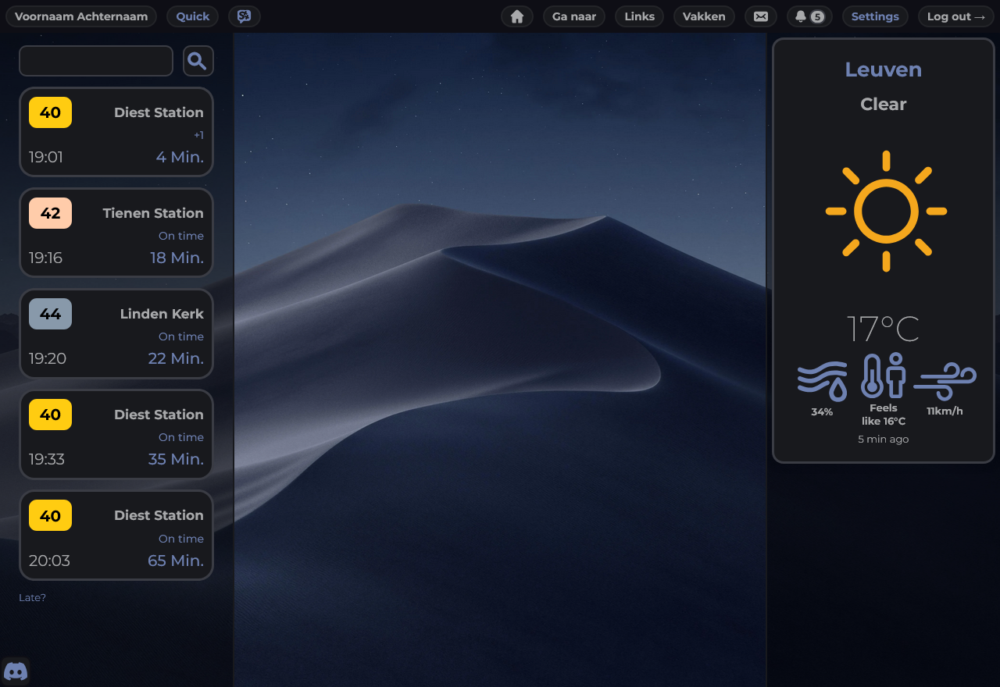
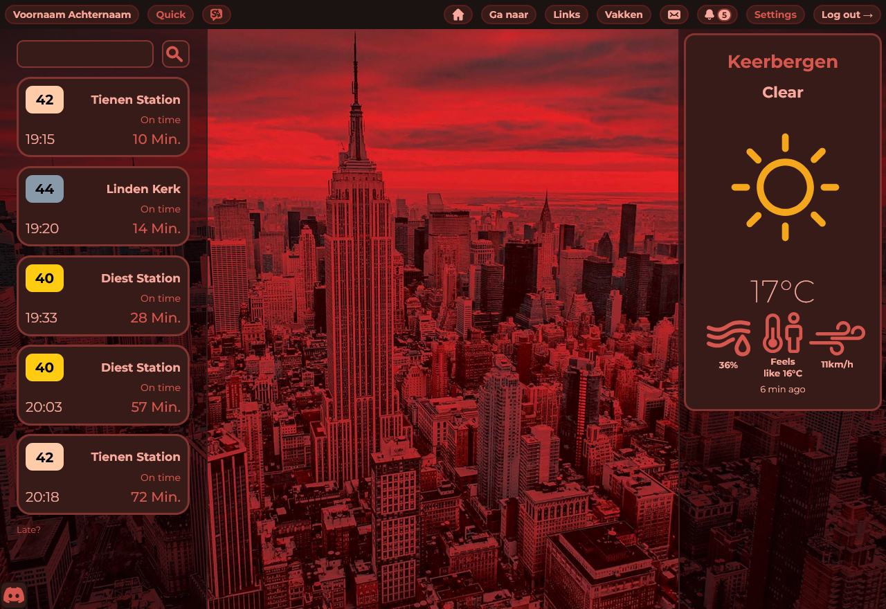

{{ define "content" }}
<section class="main-container">
  <button id="mobileMenuTrigger" class="mobile-menu-trigger">
    <svg
      class="menu-icon"
      fill="none"
      stroke="currentColor"
      viewBox="0 0 24 24"
    >
      <path
        stroke-linecap="round"
        stroke-linejoin="round"
        stroke-width="2"
        d="M4 6h16M4 12h16M4 18h16"
      ></path>
    </svg>
  </button>

  <div id="sidebar" class="sidebar">
    <button id="menuCloseBtn" class="menu-close-btn">
      <svg
        class="close-icon"
        fill="none"
        stroke="currentColor"
        viewBox="0 0 24 24"
      >
        <path
          stroke-linecap="round"
          stroke-linejoin="round"
          stroke-width="2"
          d="M6 18L18 6M6 6l12 12"
        ></path>
      </svg>
    </button>

    <div class="tab-buttons-container">
      <!-- tab buttons -->
      <button class="tab-btn" data-target="section-installation">
        <svg
          class="tab-icon"
          width="800px"
          height="800px"
          viewBox="0 0 24 24"
          fill="none"
          xmlns="http://www.w3.org/2000/svg"
        >
          <path
            d="M11 3.01254C10.9983 2.46026 11.4446 2.01114 11.9969 2.00941C12.5492 2.00768 12.9983 2.45399 13 3.00627L11 3.01254Z"
            fill="var(--text)"
          />
          <path
            d="M14.3158 10.2951L13.0269 11.592L13 3.00627L11 3.01254L11.0269 11.5983L9.73003 10.3095C9.33828 9.92018 8.7051 9.92214 8.3158 10.3139C7.9265 10.7056 7.92849 11.3388 8.32024 11.7281L8.32275 11.7306L8.32374 11.7316L12.039 15.4236L15.7206 11.7187L15.7262 11.7131L15.727 11.7123L15.7278 11.7115L15.7337 11.7056L15.7344 11.7049L14.3158 10.2951Z"
            fill="var(--text)"
          />
          <path
            d="M15.7344 11.7049C16.1237 11.3131 16.1217 10.6799 15.73 10.2906C15.3382 9.90134 14.705 9.90335 14.3158 10.2951L15.7344 11.7049Z"
            fill="var(--text)"
          />
          <path
            d="M4 12C4 10.8954 4.89543 10 6 10C6.55228 10 7 9.55228 7 9C7 8.44771 6.55228 8 6 8C3.79086 8 2 9.79086 2 12V18C2 20.2091 3.79086 22 6 22H17C19.7614 22 22 19.7614 22 17V12C22 9.79086 20.2091 8 18 8C17.4477 8 17 8.44771 17 9C17 9.55228 17.4477 10 18 10C19.1046 10 20 10.8954 20 12V17C20 18.6569 18.6569 20 17 20H6C4.89543 20 4 19.1046 4 18V12Z"
            fill="var(--text)"
          />
        </svg>
        <span>How to install</span>
      </button>
      <button class="tab-btn" data-target="section-settings">
        <svg
          class="tab-icon"
          width="800px"
          height="800px"
          viewBox="0 0 24 24"
          fill="none"
          xmlns="http://www.w3.org/2000/svg"
        >
          <path
            d="M20.1 9.2214C18.29 9.2214 17.55 7.9414 18.45 6.3714C18.97 5.4614 18.66 4.3014 17.75 3.7814L16.02 2.7914C15.23 2.3214 14.21 2.6014 13.74 3.3914L13.63 3.5814C12.73 5.1514 11.25 5.1514 10.34 3.5814L10.23 3.3914C9.78 2.6014 8.76 2.3214 7.97 2.7914L6.24 3.7814C5.33 4.3014 5.02 5.4714 5.54 6.3814C6.45 7.9414 5.71 9.2214 3.9 9.2214C2.86 9.2214 2 10.0714 2 11.1214V12.8814C2 13.9214 2.85 14.7814 3.9 14.7814C5.71 14.7814 6.45 16.0614 5.54 17.6314C5.02 18.5414 5.33 19.7014 6.24 20.2214L7.97 21.2114C8.76 21.6814 9.78 21.4014 10.25 20.6114L10.36 20.4214C11.26 18.8514 12.74 18.8514 13.65 20.4214L13.76 20.6114C14.23 21.4014 15.25 21.6814 16.04 21.2114L17.77 20.2214C18.68 19.7014 18.99 18.5314 18.47 17.6314C17.56 16.0614 18.3 14.7814 20.11 14.7814C21.15 14.7814 22.01 13.9314 22.01 12.8814V11.1214C22 10.0814 21.15 9.2214 20.1 9.2214ZM12 15.2514C10.21 15.2514 8.75 13.7914 8.75 12.0014C8.75 10.2114 10.21 8.7514 12 8.7514C13.79 8.7514 15.25 10.2114 15.25 12.0014C15.25 13.7914 13.79 15.2514 12 15.2514Z"
            fill="var(--text)"
          />
        </svg>
        <span>Settings</span>
      </button>
      <button class="tab-btn" data-target="section-quick">
        <svg
          class="tab-icon"
          fill="var(--text)"
          version="1.1"
          id="Capa_1"
          xmlns="http://www.w3.org/2000/svg"
          xmlns:xlink="http://www.w3.org/1999/xlink"
          width="800px"
          height="800px"
          viewBox="0 0 30 30"
          xml:space="preserve"
        >
          <g>
            <path
              d="M11.001,30l2.707-16.334H5L11.458,0l9.25,0.123L16.667,8H25L11.001,30z"
            />
          </g>
        </svg>
        <span>Quick Menu</span>
      </button>
    </div>
  </div>

  <div id="sidebarOverlay" class="sidebar-overlay"></div>

  <div id="content" class="content">
    <!-- content sections -->
    <div id="section-installation" class="doc-section active">
      <h2 class="section-title">How to install the Smartschool++ extension</h2>
      <p>
        In order to enhance your Smartschool you can proceed by installing the
        Smartschool++ extension.<br /><br />If you are using a chromium based
        browser like Chrome and Brave you can get the main extension from the
        webstore
        <a
          target="_blank"
          href="https://chromewebstore.google.com/detail/smartschool++/bdhficnphioomdjhdfbhdepjgggekodf"
          >here</a
        >, or
        <a
          target="_blank"
          href="https://chromewebstore.google.com/detail/smartschool++-lite/dogkhghdahlgebhojaaoijdcadmebkcg"
          >the lite version</a
        >
        which still contains most features but has less distractions (games,
        global chat, etc).<br /><br />If you are a Firefox (or similar like
        Waterfox) user you can firstly go to
        <code class="copyable">about:config</code> and ignore the warning.
        Secondly search for
        <code class="copyable">xpinstall.signatures.required</code> and put it
        to <code>false</code> by clicking the icon on the right. Last but not
        least, install the extension
        <a target="_blank" href="https://ldev.eu.org/firefox/smpp"
          >from this website</a
        >. After download, doubleclick the downloaded file and open Firefox, if
        a pop-up appears you must click "add".
      </p>
    </div>

    <div id="section-settings" class="doc-section">
      <h2 class="section-title">Settings</h2>
      <p>
        Login on your Smartschool platform and you'll see the settings option in
        the header, open it and you will see a bunch of options appear, don't
        get overwhelmed they will all be clear in a minute.
      </p>
      <br /><br />
      <h3>Available Themes:</h3>
      <div class="themes-container">
        <div class="themes-grid">
          <div class="theme-card" style="animation-delay: 0.1s">
            
            <div class="theme-overlay">
              <div class="theme-name">Cherry Haze</div>
            </div>
          </div>

          <div class="theme-card" style="animation-delay: 0.15s">
            
            <div class="theme-overlay">
              <div class="theme-name">Dark Sands</div>
            </div>
          </div>

          <div class="theme-card" style="animation-delay: 0.2s">
            
            <div class="theme-overlay">
              <div class="theme-name">Fluorescent Galaxy</div>
            </div>
          </div>

          <div class="theme-card" style="animation-delay: 0.25s">
            
            <div class="theme-overlay">
              <div class="theme-name">Midnight Sapphire</div>
            </div>
          </div>

          <div class="theme-card" style="animation-delay: 0.35s">
            
            <div class="theme-overlay">
              <div class="theme-name">Ruby Eclipse</div>
            </div>
          </div>
        </div>
      </div>

      <h2>Custom Background</h2>
      <p>
        If you would like a different background than the carefully selected
        ones from the default themes you can overwrite them with the custom
        wallpaper option. On default this is set to <code>off</code>, to enable
        it, select one of the other options. If you have a direct URL to an
        image ending with a .PNG or .JPG or any other image file type, select
        the link option and in the field on its right paste the URL. If you have
        the image on your computer downloaded, select file and click on the
        folder icon to open a file selector. Along with a custom theme, the
        sky's the limit, showcase your creations in our Discord server!
      </p>
      <h2>Blur</h2>
      <p>
        Pretty self-explanatory, it applies a blur effect to the background
        image. The higher the slider, the higher the value.
      </p>
      <h2>Weather Widget</h2>
      <p>
        Right above the custom wallpaper option you will see a text area, enter
        your location of desire in here, e.g. <code>Leuven</code>. You will also
        see a button on its right, this toggles minimal and detailed view,
        experiment with this how you want. To disable the widget, simply remove
        all text in the textbox and press enter.
      </p>
      <h2>Planner</h2>
      <p>
        Shows the planning of your current date in a compact widget on the left
        of your screen. To go a day forward or back, use the arrows at the top.
        Hover over an element to expand it if you cannot fully read it.
      </p>
      <h2>Delijn</h2>
      <p>
        Enable this in the settings panel, you will now see an extra widget
        appear on the left of your Smartschool homescreen. Enter a starting
        location in the searchbar and see all busses and extra live data such as
        destionation and, if present, delay.
      </p>
      <h2>Plant</h2>
      <p>
        On enabling, you will see a hand and once you click on it, you will see
        a seed. You can water the plant if it is not fully hydrated yet. If you
        leave it de-hydrated for too long, it will die and you will have to
        restart.
      </p>
      <h2>Weather Overlay</h2>
      <p>
        Based on the realtime weather, this gives your Smartschool page its
        extra bit of flare. You can also put it to snow or rain on default no
        matter the current weather. If you would like to turn this feature off,
        as it can be a tiny bit distracting, simply put the amount to 0. The
        higher the value, the higher the concentration snow or rain will appear
        on your screen.
      </p>
      <h2>Snake</h2>
      <p>
        All-time-classic, adds the snake minigame to your homepage, incase your
        school blocked it or you just want it accessible. The higher you put the
        speed option, the faster you will go. Move around with the arrow keys
        and press enter to restart.
      </p>
      <h2>Flappy</h2>
      <p>Flappy Bird with again, an adjustable speed. Press space to go up.</p>
      <h2>News</h2>
      <p>
        A switch to remove all the school news and links and make more of your
        background visible. After enabling you must reload the page which can be
        done using <code class="copyable">CTRL+R</code>
      </p>
      <h2>Logo</h2>
      <p>
        If your teachers get upset or if you somehow prefer the default
        Smartschool icon over the Smartschool++ icon, you can turn this setting
        on, it reverts to the default favicon.
      </p>
    </div>

    <div id="section-quick" class="doc-section">
      <h2 class="section-title">Quick Menu</h2>
      <p>
        Smartschool++ provides a great feature called Quick Menu, accessible by
        pressing <code class="copyable">:</code> or by pressing the button in
        the top navigation bar. Upon opening you will see every single
        Smartschool page, easily accessible with the arrow or tab keys and enter
        to open. Now the interesting thing is the <code>config</code> link.
      </p>
    </div>
        <div id="section-fq" class="doc-section">
      <h2 class="section-title">Quick Menu</h2>
      <p>
        Smartschool++ provides a great feature called Quick Menu, accessible by
        pressing <code class="copyable">:</code> or by pressing the button in
        the top navigation bar. Upon opening you will see every single
        Smartschool page, easily accessible with the arrow or tab keys and enter
        to open. Now the interesting thing is the <code>config</code> link.
      </p>
    </div>
  </div>
  <div id="toast" class="toast">Copied to clipboard!</div>
</section>
{{end}}
